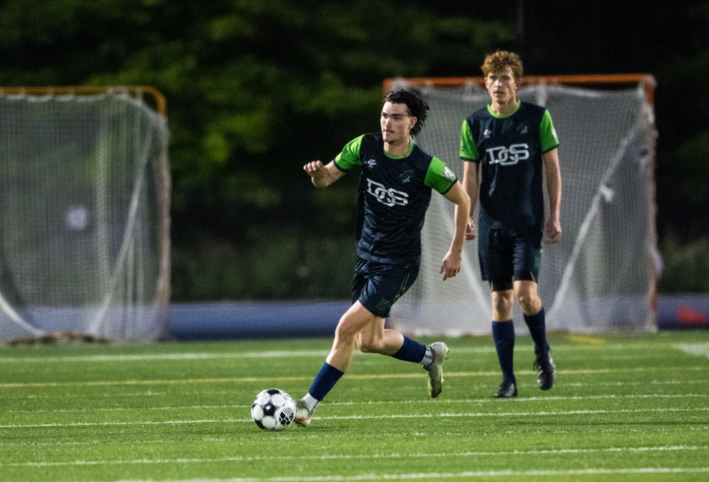
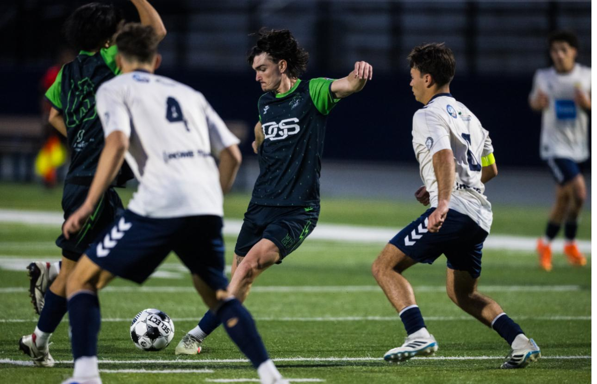
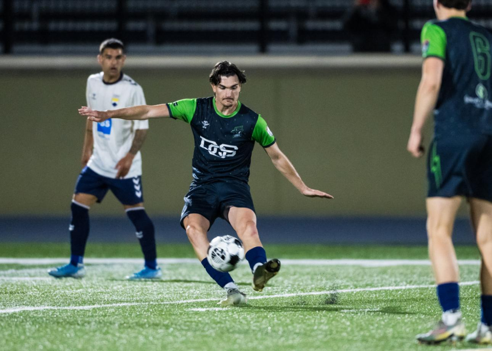
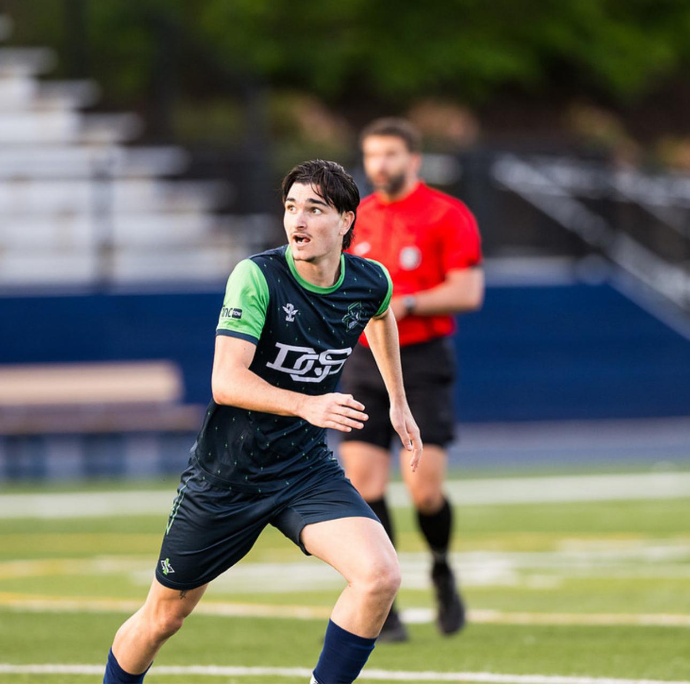

Fall 2026 recruitment · French midfielder · United States
Rayan Cappai
2006 French Central Midfielder | 6 / 8 / 10 | Fall 2026 Available
2006 French central midfielder currently competing in the U.S. Summer League with First State FC / Midnight Riders. Available for Fall 2026 college soccer and club evaluation, with 2026 highlights and full-match references ready for staff review.
2006-born
1.82 m / 77 kg
Right-footed
U.S. footage
Recruitment Snapshot
Key facts at a glance
Concise recruitment data for U.S. college soccer coaches, scouts, and pre-professional evaluators.
Video Evaluation
Highlights 2026 + two full-match references
Start with the 2026 highlights, then use the two full matches for decisions, positioning, and tempo.
Fast review
Highlights 2026 Rayan Cappai
Latest 2026 highlight reel for a fast first review of technical quality, movement, and ball security.
Highlights 2026 Rayan CappaiFull-match review
Full Match #6
Extended view of positioning, defensive work, and choices under pressure.
Watch Full Match #6Full-match review
Full Match #10
Second reference for scanning, tempo, and actions between lines.
Watch Full Match #10Best evaluated as a central midfielder who keeps possession alive, connects phases, and can move between deeper organizing, box-to-box support, and advanced link play.
Coach-facing profile
Why review Rayan?
- 2006 French central midfielder with U.S. college experience at William Penn University.
- Current U.S. Summer League footage gives coaches recent context for speed of play, physicality, and adaptation.
- Flexible 6 / 8 / 10 profile: can organize deeper, connect box-to-box, or receive higher between lines.
- Full-match video supports evaluation beyond highlights: scanning, tempo control, defensive work, and decisions under pressure.
Sport CV
Download the Sport CV
Download the CV in the preferred language.
PDF downloads
Action Photos
Current match photo set
Action photos remain available for visual context.




Academic & Eligibility Documents
Supporting documents
Academic, eligibility, and reference documents are available by email request.
Request DocumentsRecruiting fit
Best-fit opportunities
- U.S. college soccer programs seeking a Fall 2026 central midfielder.
- Pre-professional environments that value midfield range, role flexibility, and full-match evaluation.
- Clubs needing a right-footed 6 / 8 / 10 profile available for direct communication and next-step review.
Contact
Interested coaches and clubs
For Fall 2026 college recruitment, pre-professional evaluation, or club opportunities, contact Rayan directly after reviewing the video sequence and Sport CV.
Email: raykil132a@gmail.com
Phone / WhatsApp: +33 6 11 53 04 54